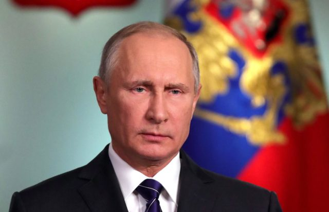
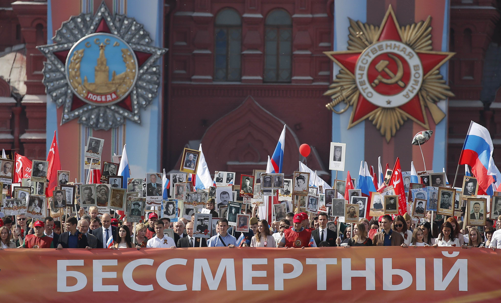
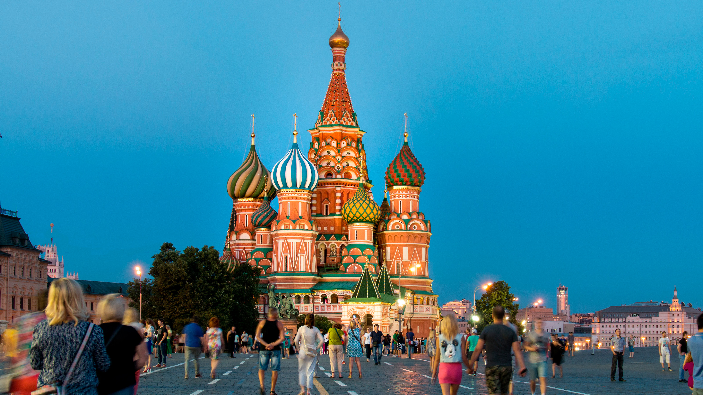

Mapa
Rusia
Rusia (en ruso: Россия, romanización: Rossíya)n. 1 o formalmenten. Federación de Rusian. (en ruso: Российская Федерация, romanización: Rossíyskaya Federátsiya) es el país más extenso del mundo. La Federación de Rusia cuenta con una superficie de 17 098 242 km2, equivalente a la novena parte de la tierra firme del planeta, y con gran variedad de relieve y de ecosistemas. Su capital es la ciudad federal de Moscú.

Rusia es el país que limita con mayor número de países, un total de dieciséis,n. 5 y el que tiene las fronteras más extensas. Limita con los siguientes países (empezando por el noroeste y siguiendo el sentido antihorario): Noruega, Finlandia, Estonia, Letonia, Bielorrusia, Lituania,n. 6 Polonia,n. 6 Ucrania,n. 7 Georgia,n. 8 Azerbaiyán, Kazajistán, República Popular China, Mongolia y Corea del Norte. Tiene límites de aguas territoriales con varios de los anteriores, con Japón y con los Estados Unidos (en concreto, con el estado de Alaska). Limita también con los estados de reconocimiento limitado Abjasia, Osetia del Sur y la Unión de Repúblicas Populares (Nueva Rusia). Las costas de Rusia están bañadas por el océano Ártico, el norte del Océano Pacífico y mares interiores como el Báltico, el Negro y el Caspio.

La historia de Rusia comienza con los eslavos orientales. Los eslavos emergieron como un grupo reconocible en Europa entre los siglos III y VIII.7 Fundado y dirigido por una clase guerrera noble de vikingos y sus descendientes, el primer estado de los eslavos orientales, la Rus de Kiev, surgió en el siglo IX y en el año 988 adoptó el cristianismo procedente del Imperio bizantino. Comenzó entonces una síntesis de las culturas bizantina y eslava que definiría la rusa durante el siguiente milenio.8 Más tarde, la Rus de Kiev se desintegró en muchos pequeños estados feudales, de los cuales el más poderoso fue el Principado de Moscú, que se convirtió en la fuerza principal en el proceso de la reunificación rusa y la lucha por la independencia contra la Horda de Oro. Moscú reunificó gradualmente los principados rusos circundantes y comenzó a dominar en el legado cultural y político de la Rus de Kiev.
